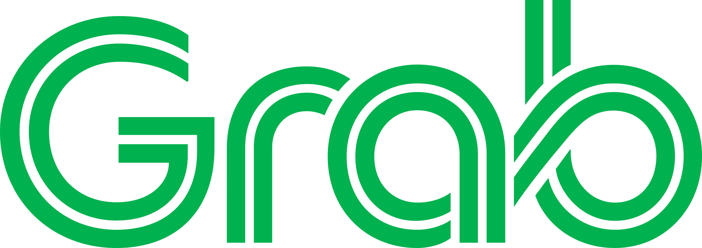

Stablecoin and payments markets
Market knowledge across issuers, exchanges, wallets, on/off-ramps, payment companies, infrastructure providers, and enterprise use cases
Work With Me
I provide curated diligence, partner evaluation, and market mapping to help investment firms, strategic teams, founders, and commercial leaders understand stablecoin, fintech, and crypto infrastructure markets through an operator's lens
Expertise I bring
I bring practical operating context from building and evaluating financial infrastructure products: who the buyers are, how distribution works, where partnerships matter, and what signals point to real adoption versus noise
Market knowledge across issuers, exchanges, wallets, on/off-ramps, payment companies, infrastructure providers, and enterprise use cases
Functional expertise in partner strategy, distribution channels, product preference, GTM sequencing, and ecosystem development
Support for assessing business model quality, adoption signals, competitive positioning, market risk, and commercial execution

Who this is for
Teams evaluating digital asset, stablecoin, fintech, payments, or infrastructure companies and looking for an operator's read on market structure, adoption, and commercial risk
Companies assessing potential partners, vendors, market entries, distribution opportunities, or ecosystem positioning
Teams building stablecoin, payment, crypto infrastructure, or fintech products that need sharper commercial strategy and GTM prioritization
How I can help
Map market structure, key players, incentives, commercial bottlenecks, and adoption paths across stablecoins, payments, fintech, and crypto infrastructure
Pressure-test partner fit, business model quality, distribution strength, competitive positioning, and commercial execution risk
Help teams clarify target customers, partnership sequencing, wedge use cases, narratives, account priorities, and operating cadence
Translate technical capabilities into practical customer use cases across payments, treasury, settlement, distribution, and financial infrastructure
If this is relevant to a diligence process, partner evaluation, or focused advisory project, LinkedIn is the best way to reach me